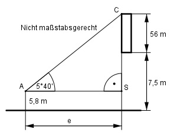

Aufgabe 91 Aus einer Höhe von 5,8 m sieht ein Wanderer die Spitze eines 56 m hohen Turmes unter einem Höhenwinkel von 5°40'. In welcher Entfernung e vom Turm befindet er sich, wenn sich der Turmfuß auf einer Höhe von 7,5 m befindet?

40 40’ = ----° = 0,6667° 60 Im Dreieck ASC: 56 m + (7,5 m – 5,8 m) tan 5,6667° = ------------------------ |*e e e * tan 5,6667° = 57,7 m |:tan 5,6667° 57,7 m 57,7 m e = -------------- = ---------- = 581,7 m tan 5,6667° 0,0992